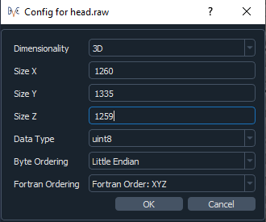
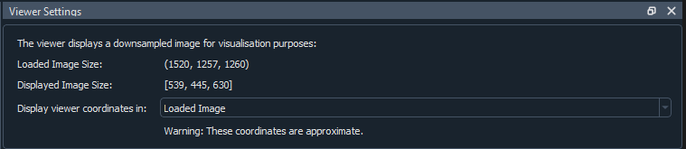
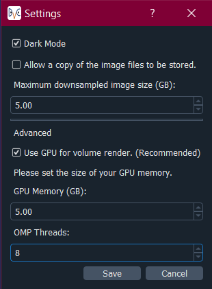

Datasets & Visualisation¶
Image Selection¶
The app currently works with the following image types:
raw
numpy (.npy)
metaimage (.mha or .mhd but only uncompressed mha files)
You will need to select a reference and a correlate image. These must have the same dimensionality. Then click View Image. If you have chosen a raw image file then you will be asked for some extra information about the file:
It is assumed that the info is the same for both the reference and correlate image. The image shown on the viewer will most likely be down-sampled (depending on the settings – see the Viewer Settings section), but the original, un-sampled image file will be used for running the DVC analysis.
Image Viewers¶
The app uses the CILViewer for the 2D and 3D image display. Both viewers show the reference image, and are linked, so will show the same orientation and slice number. By default, the volume render is switched off on the 3D viewer, but to toggle it on/off, click on the 3D viewer and press v.
To view all of the interactions for the viewers, click on one of the viewers and press h on your keyboard. Note that the interactions for each viewer differ slightly, so check them for both the 2D and 3D viewer. The interactions for the viewers are as follows (correct as of version 21.0.1 of the CILViewer)…
2D Viewer Interactions¶
Mouse Interactions:
Slice: Mouse Scroll
Quick Slice: Shift + Mouse Scroll
Pick: Left Click
Zoom: Shift + Right Mouse + Move Up/Down
Pan: Ctrl + Right Mouse + Move
Adjust Window: Alt+ Right Mouse + Move Up/Down
Adjust Level: Alt + Right Mouse + Move Left/Right
Region of Interest (ROI):
Create: Ctrl + Left Click
Delete: Alt + Left Click
Resize: Click + Drag handles
Translate: Middle Mouse + Move within ROI
Keyboard Interactions:
a: Whole image Auto Window/Level
w: Region around cursor Auto Window/Level
l: Line Profile at cursor
s: Save Current Image
x: YZ Plane
y: XZ Plane
z: XY Plane
t: Tracing
i: toggle interpolation of slice
h: help
3D Viewer Interactions¶
Mouse Interactions:
Slice: Mouse Scroll
Zoom: Right Mouse + Move Up/Down
Pan: Middle Mouse Button + Move or Shift + Left Mouse + Move
Adjust Camera: Left Mouse + Move
Rotate: Ctrl + Left Mouse + Move
Keyboard Interactions:
YZ Plane: x
XZ Plane: y
XY Plane: z
Save render to current_render.png: r
Toggle visibility of volume render: v
Toggle visibility of slice: s
Whole image Auto Window/Level: a
Viewer Settings¶
The viewer settings panel shows how much the image has been down-sampled:
If it has been down-sampled, the image will be interpolated, but you can turn this off by clicking on the viewer and then pressing i. It shows the Loaded Image Size and the Displayed Image Size. The displayed image size is the size of the image shown on the viewer, in this case it has been down-sampled. The Loaded Image Size is the original size of your chosen image. You can choose to display the viewer coordinates in the loaded image or the down-sampled image. This will change how the slices and coordinates are labelled in the corner annotation of the 2D viewer. If the image has not been down-sampled then it will only display the Loaded Image Size which is the size of the image you selected.
Downsampling Settings¶
Under File->Settings you can set the maximum down-sampled size of the image, which limits how heavily the image is down-sampled. The settings appear as below:
For the volume render on the 3D viewer, it is recommended to use GPU volume rendering, otherwise the render will be very slow. You will need to set the memory of your GPU for this. If the memory of your GPU is lower than the maximum down-sampling size you have set, then it will be the size of your GPU that dictates how much the image will be down-sampled if you choose to use the GPU for volume rendering. You will have to click View Image on the Select Image panel to update the down-sampling of the image once you have saved the new settings.